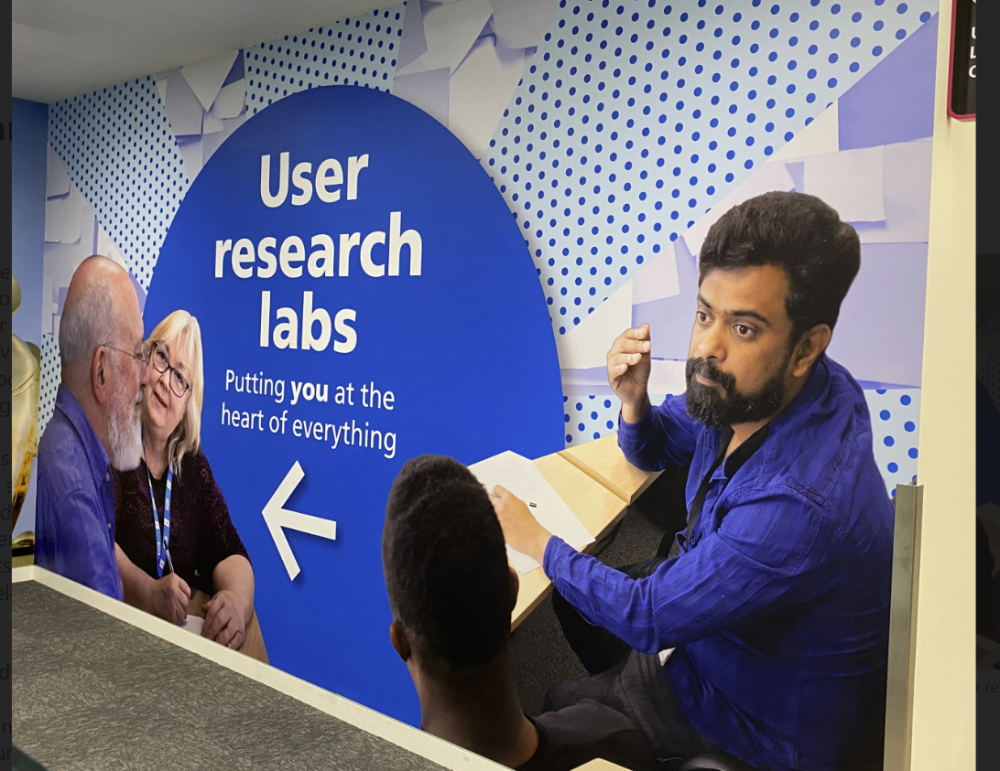

Monthnotes Nov
Really late monthnotes now. I gave up on weeknotes - it is just not feasible with all the stuff spinning in my life right now.
It has been a really challenging month outside work. The recent loss of a much-loved family member aged 96… family has been on my mind mostly.
I made a few abrupt decisions in my personal life; maybe I didn’t have the headspace to think about the consequences, mental health, physical health always a fine balancing act…

6 month review
It is now six months since setting my annual objectives - here is a briefdown of how things are going.
What is going well
Making the work of the team more visible
I ensured that transparency and adoption of the standard toolset were prioritised by the team
I supported the team to migrate away from Trello to Jira, which is now used by all the Central UCD team staff, alongside the Service Manual backlog. We have much better data on the amount of work coming into the team and how long requests take to resolve
I empowered UCD colleagues to work on shared initiatives, supporting them to raise their in the backlog, also assigning/delegating projects and tasks for colleagues to lead on as appropriate
The team completed our Objectives and Key Results (OKRs) session, as well as a Values and Principles session, agreeing the scope of work and priorities within our team. To escalate to senior staff the vast array of work that is dependent on a small team.
I worked with our product manager and delivery manager to ensure the backlog and roadmap were up to date, with new OKRs (objectives-key-results) and these are reflected openly on Jira.
I presented our UCD Ops approach to external several departments including (NICE, UKHSA, DHSC) as well as internal teams, at our user research and design community.
Leading the UCD Centre of Expertise (COE)
I chaired the weekly Knowledge Management meetings, with support from colleagues, during the last six months.
The weekly sessions alternate between reviewing content planned for publication on the UCD CoE Sharepoint and stand-ups (where colleagues share how the various workstreams are progressing).
I assigned key work and projects to Leads / Seniors across various team
Sharing UCD-profession/COE workload has been going well, with more new joiners (Seniors and Leads) in the UR and design community it has been more possible to distribute workload across teams.
As we now have many new initiatives in progress, our team has stepped-back from delivery of many projects.
UCD colleagues are leading the following initiatives:
- Naomi - running the consent forms working group
- Josie - leading on the ID cards for researchers
- Kathryn - coordinating the design leadership group for UCD CoE content
- David - writing new content for the UCD Sharepoint
- Meera and Amy - ethics working groups and ethics support channel
- Simon and Hyunjin – leading the safeguarding working group, including creating new resources and running training days
- Lisa - leading on the UR Community Networks and physical vouchers
- Tony - Re-Ops team has been managing the new Citizen and Staff panels, working closely with IG
- Karthik – taking on a project to stndardise UR planning templates
- And many more…
Engaging the design community
I completed a discovery to understand and support broader needs of design community. I facilitated multiple workshops with designers across NHSE to encourage them to support the Knowledge Management working group.
This included an open feedback sessions to hear about the challenges designers had, what content they needed on the UCD Sharepoint, as well understanding where they seek guidance currently. This led to conducting a card sort, to understand the themes within the content that designers require, as well proposing a new information architecture (IA) for the design part of the UCD CoE.
The new IA was reviewed by multiple teams, including the Service Manual team, Heads of Profession, and SLT, to seek support for the initiative and to agree the scope and priorities.
I set up an environment with the proposed content themes for colleagues to prioritise and agree who would work on the first draft. The new backlog was handed over to the Design Leadership to progress, with an understanding that content would be reviewed before final publication.
Joining up teams on strategic challenges
I helped improve the visibility of work across teams, by rolling out the adoption of User Research staff database for all UCD roles.
The UCD database now has 360 staff (across all team and roles), the database is adopted (more or less) by all teams. Expanding the usage has unblocked many challenges we were having around access to tools.
There are still some challenges to keep things up to date (without any admin colleagues) and there is scope for improving how teams use this, e.g. by linking to other datasources.
Drive progress on UCD Tools
User Research Finder – support next phase:
- I supported the Business case / Approvals, to extend ‘the prototype’
- I also explored other suppliers / PAAS tools, including MS PowerApps, PowerAutomate, PowerBI, Copilot
- I helped encouraging adoption among UR and design community
- I presented our UR Finder project to other departments, as well as writing a case study for CDDO (AI Framework)
UCD Tools
- Unmoderated testing tool – completed contract renewal
- Unmoderated testing tool – SSO migration completed
- Prototype Kit hosting – business case is now drafted
- Prototyping SaaS tool – team took over management of tool with 600 users, including licenses / billing / working with supplier
- Whiteboarding tool – agreed commercial next steps, supported business case
- Laptops – completed survey review of need for wider range of specialist devices
- Survey tool – supported Enterprise Apps team to take over contract and account management
User Research (UR) Lab
- The lab is now fully self-serviced, with support provided primarily from the UR Lab champions group.
- Lab usage has been very good, with hundreds of participants attending teams’ sessions during the last 6 months.
- I hosted three UR Lab Champions network, to agree priorities and how to manage teams bookings
- I delivered monthly training sessions, with over 50 colleagues attending, as the majority of staff are trained to use the lab, we’ve opened up access so anyone in the research profession can book the lab
- I supported the UR Lab artwork, research and design, supplier engagement and installation. Mainly by getting out the way and letting the designers lead the process

Challenges
Not much has changed since 6 months ago. The Ops team has shrunk again, and looks like it might shrink again, all while the workload continues to grow.
UCD Maturity
- There seems to be more interest in the UCD Maturity framework by other departments outside NHS England than internally
- Limited capacity – UCD Team had to cancel all strategic work, focus has been on dealing with short-term projects, business cases and crisis management
- We need to refresh the framework; it is likely going to be needed in next year to support enabling change towards UCD in historically non-user-centred teams
- We need to realign teams around Product, Engineering and UCD Maturity - to ensure UCD has fair representation and is not a third-wheel / after thought
Roles and responsibilities
- Where are the UR/Design Ops roles / career ladders?
- How do we recruit more permanent UCD Ops staff? … all budgets are linked to programmes of work?
- Why have all the admin staff been removed from Ops teams?
- How do we agree what UCD Leads, Head of UCD, SLT are responsible for?
Onboarding
- Still massive problem for UCD Team over last two years
- Staff requesting things at very short notice, but we don’t have basic info about them, who they are, role, team, when they joined, are they perm or contractorsetc.
- It is not clear where Central UCD Team should fit in wider onboarding and offboarding processes
Offboarding
- We need to understand the offboarding experience of colleagues… massive pain point across multiple teams…
- We need to establish new processes across whole of HR / Tech Services / Ops to offboarding
- How might we ensure our tools and the data they hold are secure?
Information governance
- Several new process has been introduced by information governance (IG), it is significantly more time consuming than previous process, with multiple reviews and approvals required
- Teams have limited understanding of IG and (Data Privacy Impact Assessments) DPIAs, we hear some teams are not following the right processes
- How might NHSE ensure teams have an understanding of IG processes?
Software business cases
- Teams are spending vast time creating business cases / getting budgets for critical tools
- Typically, dozens of meetings are required, hundreds of emails back and forth - even for basic as-is contract renewals
- It seems there is limited appetite to discuss how much internal timeis wasted on approvals
Tech / Devices
- Our survey shoed an evident need for a range of devices across large number of roles
- Many colleagues say their Windows laptops are unreliable, however Macbooks are still not supported by Tech Services
UR Finder
- We worked with Microsoft team to recreate workflow for UR Finder, however deployment on NHSE environment delay for several months…
- How might we ensure internal approvals happen more quickly?
- How might we support staff to attend training in MS tools?
New initatives
- UCD CoE Leads Group. Initially loads of enthusiasm, some great new starters joined, but seems to be lack of shared vision and limited coordination…
- Sustainability / NetZero agenda – not seen as a priority by teams, teams don’t have any expertise in this area. No one is talking about this
- Standards and assurance - teams are not being assured due to lack of trained assessors and assessor capacity, which is concerning for quality of services being delivered
Priorities
- Same as last year; it has been difficult period to understand priorities of our key stakeholders and leadership
- Many team have been restructured. Budget changes continue to impact delivery and colleagues morale
- Seems there is uncertainty everywhere: many teams being told to pause work or focus on cost-cutting
- 10 year plan… wait and see… what are teams doing while we wait?
Honestly, I wish this second half could have been more positive; the reality is everyone in UCD team has been working at max-capacity and stressed/anxious for many months.
With limited positive news on the horizon around strategy direction, budgets, our empowered multidisciplinary teams, particularly those with a UCD-focus, are leading the way to work through the uncertainty, together driving forward transformation across the NHS.